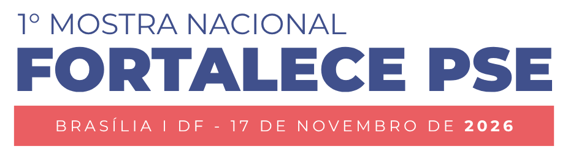
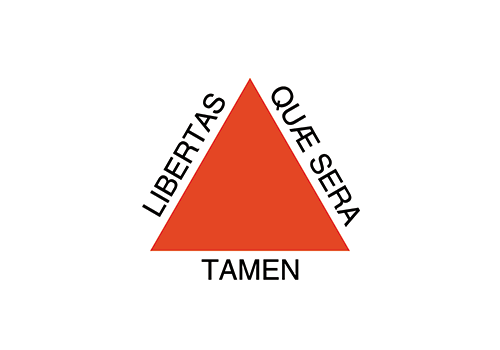

O BRASIL INTEIRO
FORTALECE O PSE!
Explore o mapa, conheça as pessoas, os territórios e as histórias de quem faz parte dessa construção coletiva em todo o Brasil.
Toque em um estado para conhecer suas histórias

Explore o mapa, conheça as pessoas, os territórios e as histórias de quem faz parte dessa construção coletiva em todo o Brasil.
Toque em um estado para conhecer suas histórias
[cidade · estado]

Selecione uma unidade federativa para conhecer suas vozes.